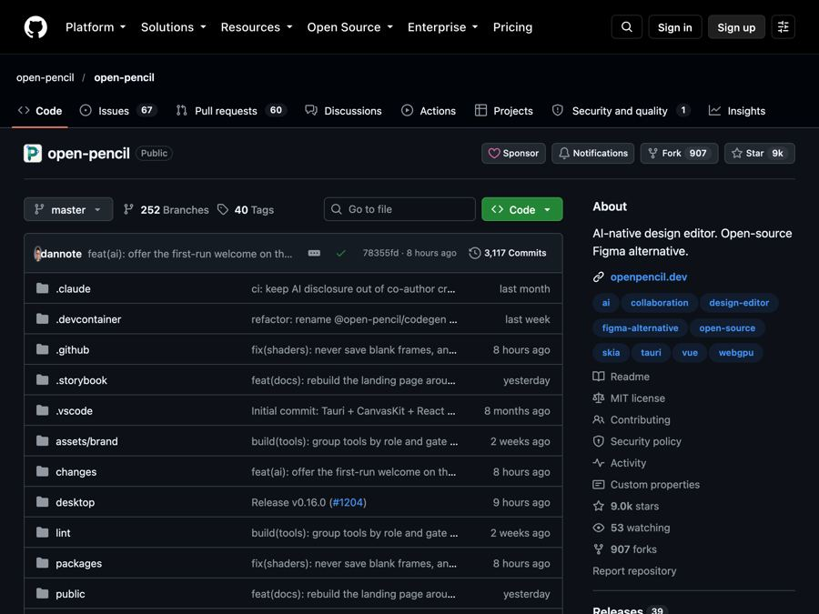

OpenPencil: open Figma files for free and design with AI
OpenPencil is a free, open-source design app that opens and saves Figma files, builds designs from a chat prompt, and lets you collaborate without an account.

The problem it solves
Someone sends you a Figma file. Figma is a popular design app used to plan websites and apps. To work on that file properly, you usually need Figma, an account, and often a paid plan.
The files themselves are in a closed format. Only Figma's own software can fully read them. If your team just wants to look, tweak, or build a quick mockup, that can feel like a lot of lock-in.
What it is
OpenPencil is a free, open-source design editor. Open source means anyone can read the code that runs it.
It opens and saves real Figma files (they end in .fig). It also opens files from another design tool called Pencil. It has a built-in AI helper: you describe what you want in a chat, and it creates and changes the design for you.
You can use it in a web browser with nothing to install, or download a small desktop app (about 15 MB).
Who it's for
- Designers who want a free way to open and edit Figma files.
- Founders and small business owners mocking up an app or website.
- Product managers who want to sketch ideas fast with AI.
- Teams that want to design together without everyone needing an account.
- Developers who want to turn designs into code or automate design work.
What you can do with it
- Open and save Figma files. Read and write .fig files, and copy and paste parts between apps.
- Design with AI. Describe what you want in chat. The AI has more than 100 tools to create shapes, set colors, arrange layouts, and more.
- Use your own AI account. It works with many AI services, including OpenRouter, Anthropic, OpenAI, Google AI and DeepSeek.
- Work together live. Share a link to co-edit in real time. You see each other's cursors, can follow someone's view, and can even start a voice call. No server and no account needed.
- Build reusable parts. Make components (reusable design pieces) and switch between versions of them.
- Preview working controls. Turn a design into a real switch, slider or text box and try it live.
- Turn images into shapes. Convert pictures into editable vector shapes using outside services.
- Check your designs. Find naming, layout and accessibility problems, and review your colors, fonts and spacing.
- Export to code. Turn a design into web code, or export images and files.
- Lay things out neatly. Auto layout and grid tools keep spacing tidy.
How to start, step by step
The easiest way needs no install. You just need a modern web browser (recent Chrome, Edge, Firefox or Safari).
- Open the OpenPencil web app at app.openpencil.dev.
- Open a Figma .fig file, or start a new design.
- To use AI, press Cmd+J on a Mac (Ctrl+J on Windows or Linux) to open the chat.
- Add your own API key from an AI service. An API key is a password-like code that lets the app use your AI account.
- Describe what you want, and watch it build.
Prefer a desktop app? Download it from the Releases page. On a Mac with Homebrew (a free app installer), you can use one line in Terminal:
brew install --cask openpencil
The desktop app needs macOS 13 or newer, Windows 10 or newer, or a recent Linux.
Good to know
- It is still growing. The makers say it is usable today, with some rough edges as features evolve. They keep a list of gaps compared with Figma on their roadmap.
- The AI is not free. OpenPencil itself costs nothing. But you bring your own AI account, and that service may charge you for use.
- Not every AI works everywhere. Some AI providers don't work in the browser, and some models handle the design tools better than others. The docs list test results.
- A small privacy note. Official builds send one anonymous ping a day. Usage stats are sent only if you agree. Their privacy page explains how to turn it off.
- Extra power for tech users. There is a command-line tool and ways to connect AI coding assistants. You can skip all of that if you just want to design.
- License: MIT. You are free to use it, change it, and even use it in a business. Just keep the license notice.
The bottom line
OpenPencil lets you open and edit Figma files for free, design with an AI helper, and collaborate without accounts. It is still young, so expect some rough spots. For quick mockups and opening shared files, it is a strong free option.
Get it: github.com/open-pencil/open-pencil
Keep reading

DBX: one small free app to open and edit 100+ kinds of databases
DBX is a free, tiny app that lets you browse, search and edit over 100 kinds of databases, with an AI helper that writes queries for you.

PureMac: free up space on your Mac without a subscription
PureMac is a free, open-source Mac cleaner that removes junk, fully uninstalls apps, and never tracks you or tries to scare you.

Strata: run a big, private AI chatbot on your own gaming PC
A free one-click installer that runs a large Qwen AI model on a normal gaming PC, so your chats never leave your computer.